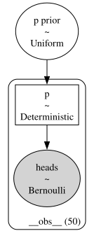

Section 5.2 — Bayesian inference computations#
This notebook contains the code examples from Section 5.2 Bayesian inference computations from the No Bullshit Guide to Statistics.
See also:
Notebook setup#
# load Python modules
import os
import numpy as np
import pandas as pd
import seaborn as sns
import matplotlib.pyplot as plt
# Figures setup
plt.clf() # needed otherwise `sns.set_theme` doesn"t work
from plot_helpers import RCPARAMS
RCPARAMS.update({"figure.figsize": (5, 3)}) # good for screen
# RCPARAMS.update({"figure.figsize": (5, 1.6)}) # good for print
sns.set_theme(
context="paper",
style="whitegrid",
palette="colorblind",
rc=RCPARAMS,
)
# High-resolution please
%config InlineBackend.figure_format = "retina"
# Where to store figures
DESTDIR = "figures/bayes/computations"
<Figure size 640x480 with 0 Axes>
# set random seed for repeatability
np.random.seed(42)
#######################################################
Example 1: estimating the probability of a biased coin#
# Sample of coin tosses observations (1=heads 0=tails)
# We assume they come from a Bernoulli distribution
ctosses = [1,1,0,0,1,0,1,1,1,1,1,0,1,1,0,0,0,1,1,1,
1,1,1,1,1,1,1,0,1,1,1,1,1,1,1,1,0,0,1,0,
0,1,0,1,0,1,0,1,1,0]
sum(ctosses), len(ctosses), sum(ctosses)/len(ctosses)
(34, 50, 0.68)
df1 = pd.DataFrame({"heads":ctosses})
df1.head()
| heads | |
|---|---|
| 0 | 1 |
| 1 | 1 |
| 2 | 0 |
| 3 | 0 |
| 4 | 1 |
# ALT. load the `ctosses` data frame from the exercises/ folder
df1 = pd.read_csv("../datasets/exercises/ctosses.csv")
df1.head()
| heads | |
|---|---|
| 0 | 1 |
| 1 | 1 |
| 2 | 0 |
| 3 | 0 |
| 4 | 1 |
df1["heads"].mean()
0.68
The model is
\[
C \sim \textrm{Bernoulli}(p)
\qquad
p \sim \mathcal{U}(0,1).
\]
# BONUS DEMO: simulate a random sample from the data model (for a fixed `true_p`)
# np.random.seed(46)
# params
n = len(ctosses)
true_p = 0.7
# gen a random dataframe DF1 like df1
from scipy.stats import bernoulli
ctosses = bernoulli(p=true_p).rvs(n)
DF1 = pd.DataFrame({"heads": ctosses})
DF1["heads"].values, DF1["heads"].mean()
(array([1, 0, 0, 1, 1, 1, 1, 0, 1, 0, 1, 0, 0, 1, 1, 1, 1, 1, 1, 1, 1, 1,
1, 1, 1, 0, 1, 1, 1, 1, 1, 1, 1, 0, 0, 0, 1, 1, 1, 1, 1, 1, 1, 0,
1, 1, 1, 1, 1, 1]),
0.78)
# BONUS DEMO: simulate a random sample from the full Bayesian model
# np.random.seed(47)
n = len(ctosses)
# gen parameters p independently for each observation
from scipy.stats import uniform
true_ps = uniform(0,1).rvs(n)
# gen a random data sample of size n
from scipy.stats import bernoulli
ctosses = bernoulli(p=true_ps).rvs(n)
DF1 = pd.DataFrame({"ctoss": ctosses})
DF1["ctoss"].values, DF1["ctoss"].mean()
(array([1, 1, 1, 1, 0, 1, 0, 0, 0, 0, 0, 0, 0, 1, 0, 0, 0, 1, 0, 1, 0, 1,
0, 1, 1, 1, 0, 0, 0, 0, 1, 1, 0, 0, 1, 0, 1, 0, 1, 1, 1, 1, 1, 1,
1, 0, 0, 0, 0, 0]),
0.46)
import bambi as bmb
formula = "heads ~ 1"
priors1 = {
"Intercept": bmb.Prior("Uniform", lower=0, upper=1),
# "Intercept": bmb.Prior("Beta", alpha=1, beta=1),
}
#######################################################
mod1 = bmb.Model(formula,
priors=priors1,
family="bernoulli",
link="identity",
data=df1)
mod1.set_alias({"Intercept":"p prior"})
mod1
WARNING (pytensor.tensor.blas): Using NumPy C-API based implementation for BLAS functions.
---------------------------------------------------------------------------
ImportError Traceback (most recent call last)
Cell In[10], line 1
----> 1 import bambi as bmb
3 formula = "heads ~ 1"
5 priors1 = {
6 "Intercept": bmb.Prior("Uniform", lower=0, upper=1),
7 # "Intercept": bmb.Prior("Beta", alpha=1, beta=1),
8 }
File /opt/hostedtoolcache/Python/3.9.20/x64/lib/python3.9/site-packages/bambi/__init__.py:3
1 import logging
----> 3 from pymc import math
5 from .backend import PyMCModel
6 from .data import clear_data_home, load_data
File /opt/hostedtoolcache/Python/3.9.20/x64/lib/python3.9/site-packages/pymc/__init__.py:48
43 pytensor.config.gcc__cxxflags = augmented
46 __set_compiler_flags()
---> 48 from pymc import _version, gp, ode, sampling
49 from pymc.backends import *
50 from pymc.blocking import *
File /opt/hostedtoolcache/Python/3.9.20/x64/lib/python3.9/site-packages/pymc/gp/__init__.py:15
1 # Copyright 2024 The PyMC Developers
2 #
3 # Licensed under the Apache License, Version 2.0 (the "License");
(...)
12 # See the License for the specific language governing permissions and
13 # limitations under the License.
---> 15 from pymc.gp import cov, mean, util
16 from pymc.gp.gp import (
17 TP,
18 Latent,
(...)
23 MarginalSparse,
24 )
25 from pymc.gp.hsgp_approx import HSGP, HSGPPeriodic
File /opt/hostedtoolcache/Python/3.9.20/x64/lib/python3.9/site-packages/pymc/gp/cov.py:52
29 from pytensor.tensor.variable import TensorConstant, TensorVariable
31 __all__ = [
32 "Constant",
33 "WhiteNoise",
(...)
49 "Kron",
50 ]
---> 52 from pymc.pytensorf import constant_fold
54 TensorLike = Union[np.ndarray, TensorVariable]
55 IntSequence = Union[np.ndarray, Sequence[int]]
File /opt/hostedtoolcache/Python/3.9.20/x64/lib/python3.9/site-packages/pymc/pytensorf.py:59
56 from pytensor.tensor.variable import TensorConstant, TensorVariable
58 from pymc.exceptions import NotConstantValueError
---> 59 from pymc.util import makeiter
60 from pymc.vartypes import continuous_types, isgenerator, typefilter
62 PotentialShapeType = Union[int, np.ndarray, Sequence[Union[int, Variable]], TensorVariable]
File /opt/hostedtoolcache/Python/3.9.20/x64/lib/python3.9/site-packages/pymc/util.py:21
18 from collections.abc import Sequence
19 from typing import Any, NewType, Optional, Union, cast
---> 21 import arviz
22 import cloudpickle
23 import numpy as np
File /opt/hostedtoolcache/Python/3.9.20/x64/lib/python3.9/site-packages/arviz/__init__.py:34
30 _log = Logger("arviz")
33 from .data import *
---> 34 from .plots import *
35 from .plots.backends import *
36 from .stats import *
File /opt/hostedtoolcache/Python/3.9.20/x64/lib/python3.9/site-packages/arviz/plots/__init__.py:2
1 """Plotting functions."""
----> 2 from .autocorrplot import plot_autocorr
3 from .bpvplot import plot_bpv
4 from .bfplot import plot_bf
File /opt/hostedtoolcache/Python/3.9.20/x64/lib/python3.9/site-packages/arviz/plots/autocorrplot.py:7
5 from ..rcparams import rcParams
6 from ..utils import _var_names
----> 7 from .plot_utils import default_grid, filter_plotters_list, get_plotting_function
10 def plot_autocorr(
11 data,
12 var_names=None,
(...)
24 show=None,
25 ):
26 r"""Bar plot of the autocorrelation function (ACF) for a sequence of data.
27
28 The ACF plots are helpful as a convergence diagnostic for posteriors from MCMC
(...)
117 >>> az.plot_autocorr(data, var_names=['mu', 'tau'], max_lag=200, combined=True)
118 """
File /opt/hostedtoolcache/Python/3.9.20/x64/lib/python3.9/site-packages/arviz/plots/plot_utils.py:15
11 from scipy.interpolate import CubicSpline
14 from ..rcparams import rcParams
---> 15 from ..stats.density_utils import kde
16 from ..stats import hdi
18 KwargSpec = Dict[str, Any]
File /opt/hostedtoolcache/Python/3.9.20/x64/lib/python3.9/site-packages/arviz/stats/__init__.py:3
1 # pylint: disable=wildcard-import
2 """Statistical tests and diagnostics for ArviZ."""
----> 3 from .density_utils import *
4 from .diagnostics import *
5 from .stats import *
File /opt/hostedtoolcache/Python/3.9.20/x64/lib/python3.9/site-packages/arviz/stats/density_utils.py:8
6 from scipy.fftpack import fft
7 from scipy.optimize import brentq
----> 8 from scipy.signal import convolve, convolve2d, gaussian # pylint: disable=no-name-in-module
9 from scipy.sparse import coo_matrix
10 from scipy.special import ive # pylint: disable=no-name-in-module
ImportError: cannot import name 'gaussian' from 'scipy.signal' (/opt/hostedtoolcache/Python/3.9.20/x64/lib/python3.9/site-packages/scipy/signal/__init__.py)
mod1.build()
mod1.graph()

idata1 = mod1.fit(draws=2000)
Modeling the probability that heads==1
Auto-assigning NUTS sampler...
Initializing NUTS using jitter+adapt_diag...
Multiprocess sampling (4 chains in 4 jobs)
NUTS: [p prior]
/Users/ivan/Projects/Minireference/STATSbook/noBSstatsnotebooks/venv/lib/python3.12/site-packages/pytensor/scalar/basic.py:3056: RuntimeWarning: divide by zero encountered in log1p
return np.log1p(x)
/Users/ivan/Projects/Minireference/STATSbook/noBSstatsnotebooks/venv/lib/python3.12/site-packages/pytensor/scalar/basic.py:3056: RuntimeWarning: divide by zero encountered in log1p
return np.log1p(x)
/Users/ivan/Projects/Minireference/STATSbook/noBSstatsnotebooks/venv/lib/python3.12/site-packages/pytensor/tensor/elemwise.py:754: RuntimeWarning: divide by zero encountered in impl (vectorized)
variables = ufunc(*ufunc_args, **ufunc_kwargs)
/Users/ivan/Projects/Minireference/STATSbook/noBSstatsnotebooks/venv/lib/python3.12/site-packages/pytensor/tensor/elemwise.py:754: RuntimeWarning: divide by zero encountered in impl (vectorized)
variables = ufunc(*ufunc_args, **ufunc_kwargs)
/Users/ivan/Projects/Minireference/STATSbook/noBSstatsnotebooks/venv/lib/python3.12/site-packages/pytensor/scalar/basic.py:2000: RuntimeWarning: divide by zero encountered in divide
return x / y
/Users/ivan/Projects/Minireference/STATSbook/noBSstatsnotebooks/venv/lib/python3.12/site-packages/pytensor/scalar/basic.py:2000: RuntimeWarning: divide by zero encountered in divide
return x / y
/Users/ivan/Projects/Minireference/STATSbook/noBSstatsnotebooks/venv/lib/python3.12/site-packages/numpy/core/fromnumeric.py:88: RuntimeWarning: invalid value encountered in reduce
return ufunc.reduce(obj, axis, dtype, out, **passkwargs)
/Users/ivan/Projects/Minireference/STATSbook/noBSstatsnotebooks/venv/lib/python3.12/site-packages/numpy/core/fromnumeric.py:88: RuntimeWarning: invalid value encountered in reduce
return ufunc.reduce(obj, axis, dtype, out, **passkwargs)
/Users/ivan/Projects/Minireference/STATSbook/noBSstatsnotebooks/venv/lib/python3.12/site-packages/pytensor/tensor/elemwise.py:754: RuntimeWarning: invalid value encountered in impl (vectorized)
variables = ufunc(*ufunc_args, **ufunc_kwargs)
/Users/ivan/Projects/Minireference/STATSbook/noBSstatsnotebooks/venv/lib/python3.12/site-packages/pytensor/tensor/elemwise.py:754: RuntimeWarning: invalid value encountered in impl (vectorized)
variables = ufunc(*ufunc_args, **ufunc_kwargs)
Sampling 4 chains for 1_000 tune and 2_000 draw iterations (4_000 + 8_000 draws total) took 3 seconds.
idata1
arviz.InferenceData
-
<xarray.Dataset> Size: 80kB Dimensions: (chain: 4, draw: 2000) Coordinates: * chain (chain) int64 32B 0 1 2 3 * draw (draw) int64 16kB 0 1 2 3 4 5 6 ... 1994 1995 1996 1997 1998 1999 Data variables: p prior (chain, draw) float64 64kB 0.6102 0.6364 0.6419 ... 0.6463 0.5637 Attributes: created_at: 2024-10-14T14:08:12.695529+00:00 arviz_version: 0.19.0 inference_library: pymc inference_library_version: 5.17.0 sampling_time: 2.8274266719818115 tuning_steps: 1000 modeling_interface: bambi modeling_interface_version: 0.14.0 -
<xarray.Dataset> Size: 992kB Dimensions: (chain: 4, draw: 2000) Coordinates: * chain (chain) int64 32B 0 1 2 3 * draw (draw) int64 16kB 0 1 2 3 4 ... 1996 1997 1998 1999 Data variables: (12/17) acceptance_rate (chain, draw) float64 64kB 1.0 1.0 1.0 ... 1.0 0.6039 diverging (chain, draw) bool 8kB False False ... False False energy (chain, draw) float64 64kB 34.57 33.13 ... 34.17 energy_error (chain, draw) float64 64kB -1.533 -0.181 ... 0.5044 index_in_trajectory (chain, draw) int64 64kB -1 3 -1 1 3 ... -2 -2 1 1 1 largest_eigval (chain, draw) float64 64kB nan nan nan ... nan nan ... ... process_time_diff (chain, draw) float64 64kB 0.000578 ... 0.0003 reached_max_treedepth (chain, draw) bool 8kB False False ... False False smallest_eigval (chain, draw) float64 64kB nan nan nan ... nan nan step_size (chain, draw) float64 64kB 1.012 1.012 ... 1.438 step_size_bar (chain, draw) float64 64kB 1.441 1.441 ... 1.293 tree_depth (chain, draw) int64 64kB 2 2 1 1 2 2 ... 2 2 2 1 2 1 Attributes: created_at: 2024-10-14T14:08:12.702456+00:00 arviz_version: 0.19.0 inference_library: pymc inference_library_version: 5.17.0 sampling_time: 2.8274266719818115 tuning_steps: 1000 modeling_interface: bambi modeling_interface_version: 0.14.0 -
<xarray.Dataset> Size: 800B Dimensions: (__obs__: 50) Coordinates: * __obs__ (__obs__) int64 400B 0 1 2 3 4 5 6 7 8 ... 42 43 44 45 46 47 48 49 Data variables: heads (__obs__) int64 400B 1 1 0 0 1 0 1 1 1 1 1 ... 0 1 0 1 0 1 0 1 1 0 Attributes: created_at: 2024-10-14T14:08:12.704210+00:00 arviz_version: 0.19.0 inference_library: pymc inference_library_version: 5.17.0 modeling_interface: bambi modeling_interface_version: 0.14.0
import arviz as az
az.summary(idata1, kind="stats")
| mean | sd | hdi_3% | hdi_97% | |
|---|---|---|---|---|
| p prior | 0.674 | 0.064 | 0.554 | 0.792 |
az.summary(idata1)
| mean | sd | hdi_3% | hdi_97% | mcse_mean | mcse_sd | ess_bulk | ess_tail | r_hat | |
|---|---|---|---|---|---|---|---|---|---|
| p prior | 0.674 | 0.064 | 0.554 | 0.792 | 0.001 | 0.001 | 3491.0 | 5335.0 | 1.0 |
az.plot_posterior(idata1, var_names="Intercept", point_estimate="mode", hdi_prob=0.9);
---------------------------------------------------------------------------
KeyError Traceback (most recent call last)
File ~/Projects/Minireference/STATSbook/noBSstatsnotebooks/venv/lib/python3.12/site-packages/arviz/utils.py:78, in _var_names(var_names, data, filter_vars, errors)
77 try:
---> 78 var_names = _subset_list(
79 var_names, all_vars, filter_items=filter_vars, warn=False, errors=errors
80 )
81 except KeyError as err:
File ~/Projects/Minireference/STATSbook/noBSstatsnotebooks/venv/lib/python3.12/site-packages/arviz/utils.py:158, in _subset_list(subset, whole_list, filter_items, warn, errors)
157 if not np.all(existing_items) and (errors == "raise"):
--> 158 raise KeyError(f"{np.array(subset)[~existing_items]} are not present")
160 return subset
KeyError: "['Intercept'] are not present"
The above exception was the direct cause of the following exception:
KeyError Traceback (most recent call last)
Cell In[16], line 1
----> 1 az.plot_posterior(idata1, var_names="Intercept", point_estimate="mode", hdi_prob=0.9);
File ~/Projects/Minireference/STATSbook/noBSstatsnotebooks/venv/lib/python3.12/site-packages/arviz/plots/posteriorplot.py:231, in plot_posterior(data, var_names, filter_vars, combine_dims, transform, coords, grid, figsize, textsize, hdi_prob, multimodal, skipna, round_to, point_estimate, group, rope, ref_val, rope_color, ref_val_color, kind, bw, circular, bins, labeller, ax, backend, backend_kwargs, show, **kwargs)
229 if transform is not None:
230 data = transform(data)
--> 231 var_names = _var_names(var_names, data, filter_vars)
233 if coords is None:
234 coords = {}
File ~/Projects/Minireference/STATSbook/noBSstatsnotebooks/venv/lib/python3.12/site-packages/arviz/utils.py:83, in _var_names(var_names, data, filter_vars, errors)
81 except KeyError as err:
82 msg = " ".join(("var names:", f"{err}", "in dataset"))
---> 83 raise KeyError(msg) from err
84 return var_names
KeyError: 'var names: "[\'Intercept\'] are not present" in dataset'
# ALT. manual plot of posterior density
post = az.extract(idata1, group="posterior", var_names="Intercept").values
sns.kdeplot(x=post.flatten(), bw_adjust=1);
# BONUS: verify the prior was flat
# mod1.plot_priors();
# mod1.predict(idata1, kind="response")
# preds = az.extract(idata1, group="posterior_predictive", var_names="win").values
# sns.histplot(x=preds.sum(axis=0), stat="density")
# sns.kdeplot(x=post.mean(axis=0)*30)
ALT. Declare a model in PyMC#
import pymc as pm
with pm.Model() as model:
# Specify the prior distribution of unknown parameter
p = pm.Beta("p", alpha=1, beta=1)
# Specify the likelihood distribution and condition on the observed data
y_obs = pm.Binomial("y_obs", n=1, p=p, observed=df1)
# Sample from the posterior distribution
idata1_alt = pm.sample(draws=2000)
az.summary(idata1_alt, kind="stats")
pred_dists1 = (pm.sample_prior_predictive(1000, model).prior_predictive["y_obs"].values,
pm.sample_posterior_predictive(idata1, model).posterior_predictive["y_obs"].values)
fig, axes = plt.subplots(4, 1, figsize=(9, 9))
for idx, n_d, dist in zip((1, 3), ("Prior", "Posterior"), pred_dists1):
az.plot_dist(dist.sum(-1),
hist_kwargs={"color":"0.5", "bins":range(0, 22)},
ax=axes[idx])
axes[idx].set_title(f"{n_d} predictive distribution", fontweight='bold')
axes[idx].set_xlim(-1, 21)
axes[idx].set_xlabel("number of success")
az.plot_dist(pm.draw(p, 1000),
plot_kwargs={"color":"0.5"},
fill_kwargs={'alpha':1}, ax=axes[0])
axes[0].set_title("Prior distribution", fontweight='bold')
axes[0].set_xlim(0, 1)
axes[0].set_ylim(0, 4)
axes[0].tick_params(axis='both', pad=7)
axes[0].set_xlabel("p")
az.plot_dist(idata1.posterior["Intercept"],
plot_kwargs={"color":"0.5"},
fill_kwargs={'alpha':1},
ax=axes[2])
axes[2].set_title("Posterior distribution", fontweight='bold')
axes[2].set_xlim(0, 1)
axes[2].tick_params(axis='both', pad=7)
axes[2].set_xlabel("p");
# ???
# from scipy.stats import binom
# predictions1 = (binom(n=1, p=idata1.posterior["Intercept"].mean()).rvs((4000, len(ctosses))),
# pred_dists1[1])
# for d, c, l in zip(predictions, ("C0", "C4"), ("posterior mean", "posterior predictive")):
# ax = az.plot_dist(d.sum(-1),
# label=l,
# figsize=(10, 5),
# hist_kwargs={"alpha": 0.5, "color":c, "bins":range(0, 22)})
# ax.set_yticks([])
# ax.set_xlabel("number of success")
Example 2: estimating the IQ score#
# Sample of IQ observations
iqs = [ 82.6, 105.5, 96.7, 84.0, 127.2, 98.8, 94.3,
122.1, 86.8, 86.1, 107.9, 118.9, 116.5, 101.0,
91.0, 130.0, 155.7, 120.8, 107.9, 117.1, 100.1,
108.2, 99.8, 103.6, 108.1, 110.3, 101.8, 131.7,
103.8, 116.4]
We assume the IQ scores come from a population with standard deviation \(\sigma = 15\).
df2 = pd.DataFrame({"iq":iqs})
# df2.head()
np.mean(iqs)
# ALT. load the `iqs.csv` data file from the exercises/ folder
df2 = pd.read_csv("../datasets/exercises/iqs.csv")
# df2.head()
df2["iq"].mean()
The model is
\[
X \sim \mathcal{N}(M, \sigma=15)
\qquad
M \sim \mathcal{N}(\mu_M=100,\sigma_M=40).
\]
#######################################################
import bambi as bmb
import pymc as pm
formula2 = "iq ~ 1"
priors2 = {
"Intercept": bmb.Prior("Normal", mu=100, sigma=40),
# "sigma": bmb.Prior("Normal", mu=15, sigma=0.01), # hack to get constant value
# "sigma": bmb.Prior("Deterministic", var=pm.ConstantData("sigma", value=15)),
# pm.ConstantData
"sigma": bmb.Prior("ConstantData", value=15),
}
mod2 = bmb.Model(formula2,
priors=priors2,
family="gaussian",
link="identity",
data=df2)
mod2.set_alias({"Intercept":"mu prior"})
mod2
mod2.build()
mod2.graph()
idata2 = mod2.fit(draws=2000)
# idata2
az.plot_posterior(idata2, var_names="Intercept", point_estimate="mode", hdi_prob=0.9);
import arviz as az
az.summary(idata2, kind="stats")
az.summary(idata2, kind="stats", stat_focus="median")
mod2.backend.model.data_vars
mod2.backend.model.observed_RVs
mod2.backend.model.unobserved_RVs
Discussion#
MCMC diagnostic plots#
There are several Arviz plots we can use to check if the Markov Chain Monte Carlo chains were sampling from the posterior as expected, or …
# az.plot_trace(idata);
# az.plot_trace(idata, kind="rank_bars");
# az.plot_trace(idata, kind="rank_vlines");
# plot_cap ~= partial regression plots?
# e.g. plot_cap(model_2, fitted_2, "weight", ax=ax);
Choice of priors#
Different priors lead to different posteriors.
See Code 1.8 and Figure 1.7 in
chp_01.ipynb
from scipy.stats import beta
x = np.linspace(0, 1, 500)
params = [(0.5, 0.5), (1, 1), (3,3), (100, 25)]
labels = ["Jeffreys",
"MaxEnt",
"Weakly Informative",
"Informative"]
_, ax = plt.subplots()
for (α, β), label, c in zip(params, labels, (0, 1, 4, 2)):
pdf = beta.pdf(x, α, β)
ax.plot(x, pdf, label=f"{label}", c=f"C{c}", lw=3)
ax.set(yticks=[], xlabel="θ", title="Priors")
ax.legend()
# plt.savefig("img/chp01/prior_informativeness_spectrum.png")
Bayesian workflow#
See also chp_09.ipynb